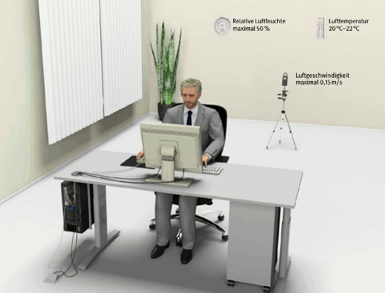

Ein behagliches Raumklima herrscht vor, wenn Lufttemperatur, Luftfeuchte, Luftbewegung und Wärmestrahlung im Raum als optimal empfunden werden. Dieses Behaglichkeitsempfinden kann individuell differieren und ist vor allem abhängig von Aktivitätsgrad, Bekleidung, Aufenthaltsdauer im Raum und unterliegt tages- und jahreszeitlichen Schwankungen sowie dem persönlichen Empfinden.
Büroräume sollten vorrangig frei über Fenster gelüftet werden. Untersuchungen zeigen, dass bei freier Fensterlüftung weniger Beschwerden auftreten als bei klimatisierten Büroräumen. Werden bereits raumlufttechnische Anlagen eingesetzt, müssen sie regelmäßig gereinigt, gewartet und gegebenenfalls instand gesetzt werden, um gesundheitliche Gefährdungen auszuschließen.
| Anhang der Bildschirmarbeitsverordnung | |
| 18. | Die Arbeitsmittel dürfen nicht zu einer erhöhten Wärmebelastung am Bildschirmarbeitsplatz führen, die unzuträglich ist. Es ist für eine ausreichende Luftfeuchtigkeit zu sorgen. |
Werden die nachfolgend angegebenen Bereiche der Klimafaktoren eingehalten, wird das Raumklima von einem Großteil der Beschäftigten als behaglich empfunden (Abbildung 48).

Abbildung 48: Behaglichkeitsbereich
Wird davon abgewichen, können die Beschäftigten sich in ihrem Wohlbefinden gestört fühlen und ihr Konzentrationsvermögen und ihre Leistungsfähigkeit beeinträchtigt sein.
Die Wärmezufuhr in einem Raum wird nicht nur durch Heizung und Sonneneinstrahlung, sondern auch durch Anzahl und Tätigkeiten (Energieumsatz) der Personen sowie Art und Anzahl der Arbeitsmittel bestimmt. Energiesparende Arbeitsmittel verringern diese Wärmezufuhr.
Die Lufttemperatur in Büroräumen muss mindestens 20 °C betragen. Lufttemperaturen bis 22 °C werden empfohlen. Die Lufttemperatur soll 26 °C nicht überschreiten.
Wenn die Außenlufttemperatur über 26 °C beträgt und geeignete Sonnenschutzmaßnahmen verwendet werden, darf die Lufttemperatur höher sein. Beim Überschreiten einer Lufttemperatur im Raum von 26 °C sollen, von 30 °C müssen zusätzliche, zweckmäßige Maßnahmen ergriffen werden. Wird die Lufttemperatur im Raum von 35 °C überschritten, so ist der Raum für die Zeit der Überschreitung ohne besondere Maßnahmen nicht als Arbeitsraum geeignet.
Die Lufttemperatur wird für sitzende Tätigkeiten in einer Höhe von 0,60 m und bei stehenden Tätigkeiten in einer Höhe von 1,10 m über dem Fußboden gemessen.
Um übermäßige Erwärmung der Räume (Temperatur über 26 °C) durch Sonneneinstrahlung entgegenzuwirken, sind an Fenstern, Oberlichtern oder Glaswänden wirksame Sonnenschutzvorrichtungen vorzusehen. Sie sollen auch störende direkte Sonneneinstrahlung auf den Arbeitsplatz vermeiden.
Die Luftgeschwindigkeit im Raum soll bei sitzender Tätigkeit und einer Lufttemperatur von 20 °C einen Wert von 0,15 m/s am Arbeitsplatz nicht überschreiten. Bei höheren Raumtemperaturen können höhere Luftgeschwindigkeiten als angenehm empfunden werden.
Die relative Luftfeuchte in Büroräumen mit einer Fensterlüftung ergibt sich durch den Luftaustausch. Eine zusätzliche Befeuchtung der Raumluft ist aus gesundheitlichen Gründen nicht notwendig und sollte nur dann erfolgen, wenn dies betriebstechnische Gründe – zum Beispiel in Druckereien – erfordern.
Vorhandene raumlufttechnische Anlagen mit Luftbefeuchtern sollten so ausgelegt sein, dass die relative Luftfeuchte höchstens 50 Prozent beträgt. Eine zu hohe Luftfeuchte ist problematisch, weil sie die Bildung von Schimmelpilzen unterstützt, die wiederum Ursache für verschiedene Gesundheitsstörungen sein können.
Weitere Literatur
|